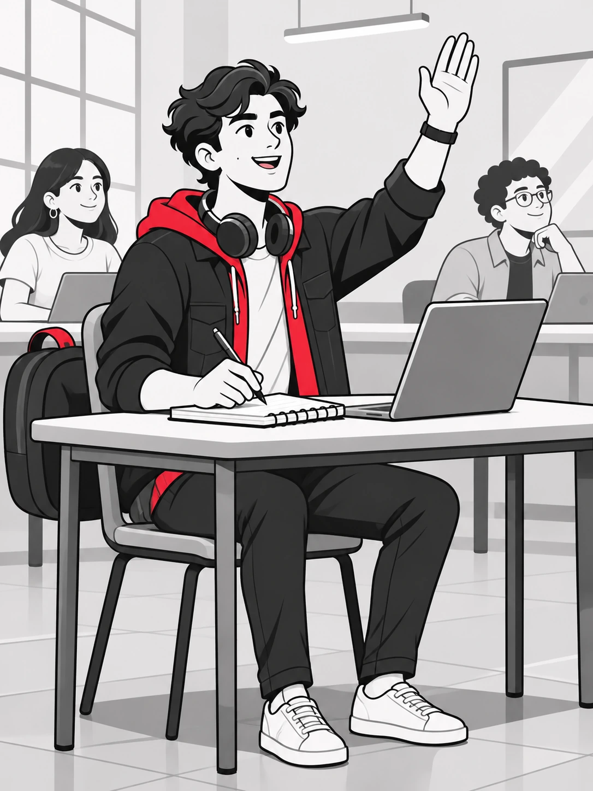

Conoce la historia de Diego y decide cómo actuarías desde tu experiencia.
Recurso interactivo
Recorre el caso y observa las señales
Avanza por las cuatro escenas y decide cómo actuarías.
Escena 1 de 4

Semana 1
Todo comienza bien
Diego inicia el curso con entusiasmo. Participa, toma apuntes y se involucra activamente en clase.
Tiene expectativas positivas y se siente capaz de avanzar durante el ciclo.
Lo que podría estar pensando
“Este ciclo me irá mucho mejor.”